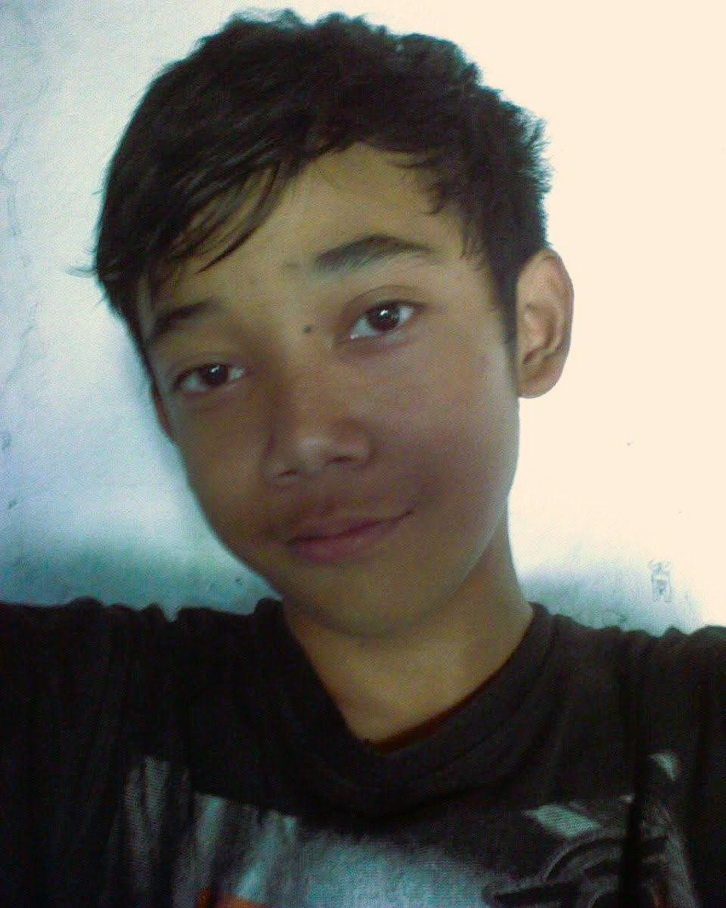
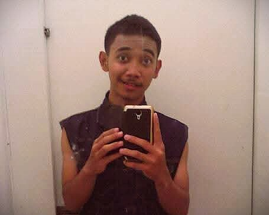
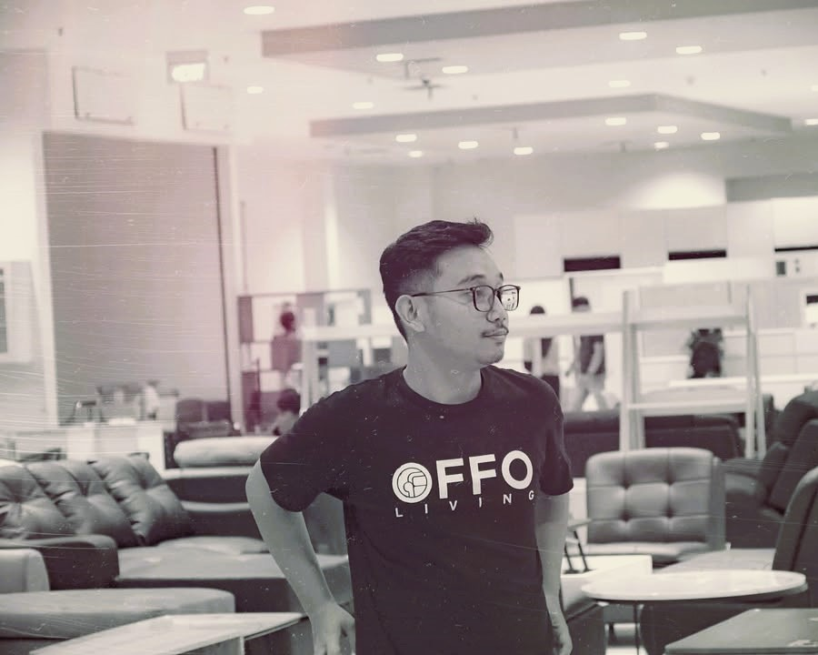
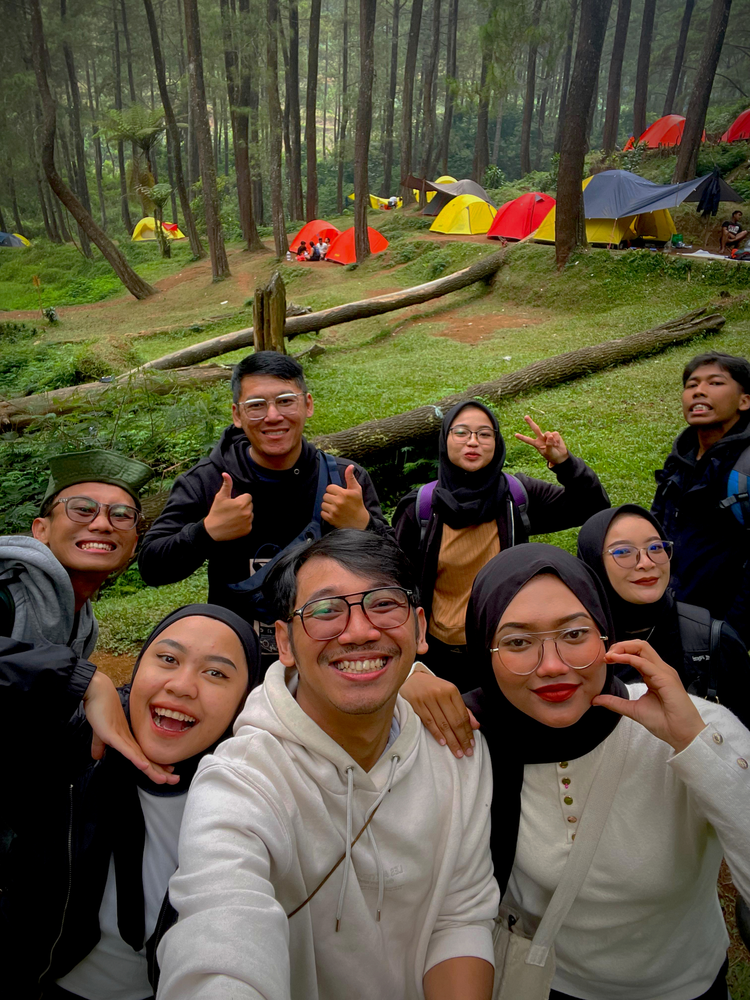
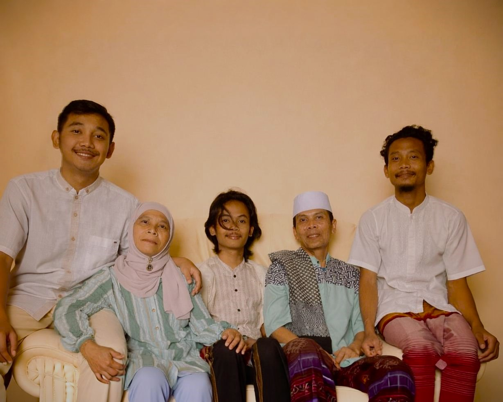

From: Us
To: Our Beloved
To: Our Beloved
27
Klik amplop buat liat isinya...

"little traces of you"
R01 / 20xx×

"growing and glowing"
R02 / 20xx×

"brave soul"
R03 / 20xx×

"always got your back"
R04 / 20xx×
"for all days you didn't give up"
R05 / 20xx×

"home is where you are"
R06 / 20xx×
Coba sentuh fotonya...
RETRO-VISION